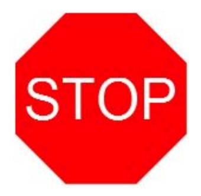
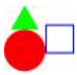
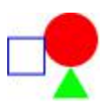
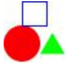
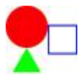
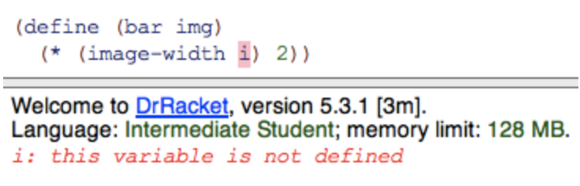
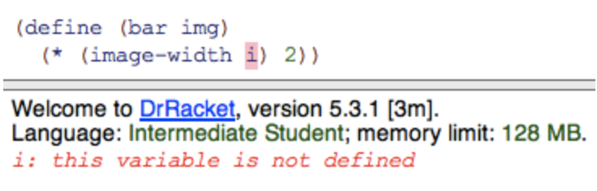

Module 1 Questions
Table of Contents
Created on 2020-07-17/15:54
Module 1 Questions
Expressions
- Question 1

(sqrt (+ (sqr 3) (sqr 4)))
RESULTS: 5
- this is pretty much the most difficult math seen in this course
- Question 2
- If you see #i2.718281828459045 appear in the interaction pane, it means:
- It's an imaginary number.
- Someone just sent a strange tweet.
- It's a number very close to 2.718281828459045. <-
- I thought you said there wouldn't be much math!
- If you see #i2.718281828459045 appear in the interaction pane, it means:
- Question 3
- Which of the following are expressions:
sqr(+ 2 3)<-+(sqrt 2)i <-#i1.4142135623730951<-1<-)
- Which of the following are expressions:
- At this point in the course an expression is either a value, or of the form
(<primitive> <expression> ...). We will shortly add to our vocabulary of expressions.
- Question 4
- Which of the folloing are values:
sqr(+ 2 3)+(sqrt 2)#i1.4142135623730951<-1<-)
- Which of the folloing are values:
- Question 5
- What would be the result of evaluating the following expression:
(/ (* 2 3) (- 3 1))- 18
- 6
- 2
- 3 <-
- Question 6
Recall that the average of a set of numbers is the sum of the numbers divided by how many numbers there are.
Which of these expressions produces the average of the numbers 4, 6.2 and -12? Check ALL that are correct.
(/ 3 (+ 6.2 -12 4))(/ (+ -8 6.2) 3)<-(/ (+ 4 6.2 -12) 3)<--0.6<-
- Question 7
- Why are we using Beginning Student Language in this course? Select all answers that apply.
- It is simple to learn, allowing you to focus your attention on the design methods correct
- It is commonly used in industry, so you can get a job programming in BSL
- It forms the core of many other languages, which will help you transfer what you learn to other languages correct
- There are so many popular programming languages that no single language will be useful for many projects correct
- Why are we using Beginning Student Language in this course? Select all answers that apply.
Evaluation
- Question 1
- Consider the following expression:
(* (- 4 2) 3)- Select all calls to primitives.
(* (- 4 2) 3)<-,*(- 4 2)<-3-42
(* (- 4 2) 3)and(- 4 2)are primitive calls because they are expressions that start with open parenthesis and the name of a primitive operation.
- Question 2
- Consider the following expression:
(* (- 4 2) 3)- Select all the operators.
(* (- 4 2) 3)(*)<-(- 4 2)3-<-42
- Question 3
- Consider the following expression:
(* (- 4 2) 3)- Select all operands.
(* (- 4 2) 3)(*)(- 4 2)<-3<--4<-2<-
- Question 4
- What is the next step in the following evaluation?
(/ (* 3 4) (+ (- 7 4) 3))(/ 12 (+ (- 7 4) 3))(/ 12 (+ 3 3))
- What is the next step in the following evaluation?
- Question 5
- What is the next step in the following evaluation?
(/ (* 3 4) (+ (- 7 4) 3))(/ 12 (+ (- 7 4) 3))(/ 12 (+ 3 3))(/ 12 6)
- What is the next step in the following evaluation?
- Question 6
- What is the next step in the following evaluation?
(/ (* 3 4) (+ (- 7 4) 3))(/ 12 (+ (- 7 4) 3))(/ 12 (+ 3 3))(/ 12 6)2
- What is the next step in the following evaluation?
Strings and Images
- Question 1
- What is the value of the expression below?
(substring "hello" 1 3)"hello""hel""ell""el"<-"he"
- Question 2
- Will the following produce any errors?
(string-append "1" "2")- Yes
- No <-
- Question 3
- Which primitive is required in the following expression to produce the stop sign image below?
(______ (text "STOP" 48 "white") (regular-polygon 60 8 "solid" "red"))

- above
- beside
- overlay <-
- append
- Question 4
- Which image will the following expression produce?
(beside (square 20 "outline" "blue") (above (circle 15 "solid" "red") (triangle 20 "solid" "green")))
- 
- 
- 
- 
- The above will produce image 2.
- Question 5
- Assume that the image below shows an entire program file. Why does running the program produce the following error?

- We didn't define a function named
abovein the program. - We didn't include
(require 2htdp/image)at the beginning of the program. <- abovedoes not accept a square as an argument.
- We didn't define a function named
- Assume that the image below shows an entire program file. Why does running the program produce the following error?
- Question 6
- We have revised the program now, why are we still getting an error?
- We still need to define a function named above.
- We need to find the collection "2htpd."
- We misspelled the name of the required module, so we need to replace "2htpd" with "2htdp." <–
- We have revised the program now, why are we still getting an error?
Constant Definitions
- Question 1
- Consider the following program:
- What result is produced when the program is run?
(define FOO (* 2 3)) ; FOO = 6 (define BAR (* FOO 2)) ; BAR = 12 (* FOO BAR) ; (* FOO BAR) = (* 6 12) = 72
RESULTS: 72
- Question 2
- Given the following program:
(define FOO (* 2 3)) (define BAR (* FOO 2)) (* FOO BAR)
- What is the result of the first evaluation step?
(define FOO (* 2 3)) (define BAR (* FOO 2)) (* (* 2 3) BAR)
(define FOO (* 2 3)) (define BAR (* FOO 2)) (* 6 BAR)
(define FOO (* 2 3)) (define BAR (* (* 2 3) 2)) (* FOO BAR)
(define FOO 6) (define BAR (* FOO 2)) (* FOO BAR)
- Answer is #4.
Function Definitions
- Question 1
- Why should you use function definitions?
- To be lazy
- To make the code easier to read
- To avoid duplicated code
- All of the above <-
- Why should you use function definitions?
- Question 2
- Suppose we want a function that will give the length of the hypotenuse of any right angle triangle. Which of the following would achieve that? Remember that the expression we used when the side lengths were 3 and 4 was:
(sqrt (+ (sqr 3) (sqr 4)))(define (pythag 3 4) (sqrt (+ (sqr 3) (sqr4))))
(sqrt (+ (sqr a) (sqr b)))
(define c (sqrt (+ (sqr a) (sqr b))))
(define (pythag a b) (sqrt (+ (sqr a) (sqr b))))
- Answer is $4.
- Suppose we want a function that will give the length of the hypotenuse of any right angle triangle. Which of the following would achieve that? Remember that the expression we used when the side lengths were 3 and 4 was:
- Question 3
- What should we do to fix the following error:

- Replace
iin the program - Include
(require 2htdp/image)at the beginning of the program - Replace
iwithimg, which is the name of the parameter for this function <-
- Replace
- What should we do to fix the following error:

Intro lab questions
Problem 1
- Use string primitives to create an expression that concatenates
prefixandsuffixand adds "_" between them (so you get "hello_world" when you run the program).
Problem 2
- Use string primitives to create an expression that adds "_" at position i (the position that is i characters from the left of the string). Again, in this particular example, the expected result is "hello_world".
Problem 3
- Create an expression that counts the number of pixels in the CAT image.
Problem 4
- Create an expression that computes whether CAT is "tall" (height is larger than its width), "wide" (width is larger than its height), or "square" (height is the same as its width).
Problem 5
- Create an expression that computes whether the first character in STR is "h". In this example, the expected result is true.